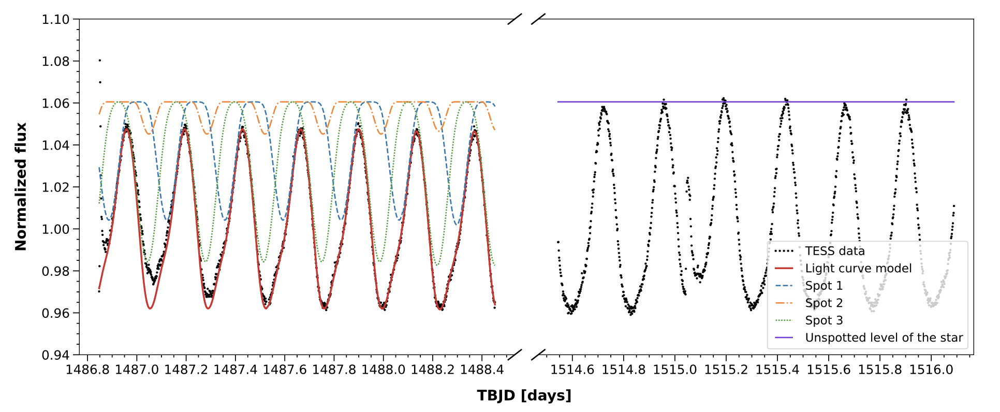
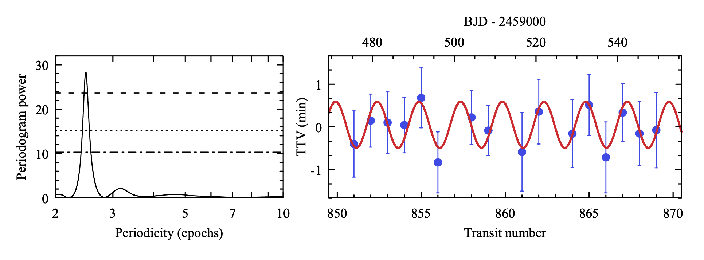

Welcome TESS followers to our latest news bulletin!
This week, we are looking at three recent papers from the archive. Enjoy!
Unveiling the spectacular over 24-hour flare of star CD-36 3202 (Bicz et al. 2023) :
Studies of stellar activity provide deeper insight into the mechanisms and processes governing the formation, internal structure, and evolution of stars. CD-36 3202 is an active K2V star with a mass of 0.8 MSun, radius of 0.8 RSun, effective temperature of 4885 K, age of ~40 Myr and a rotation period of about 5.6 hours. Bicz et al. (2023) present a comprehensive analysis of the TESS photometry of CD-36 3202, aimed at better understanding the flaring activity as well as the distribution and properties of starspots. TESS observed the target in Sectors 6, 7, 33, 34, and 61, and detected a prominent variability signal suggesting spot-induced modulations with an amplitude of ~5-6%, as well as stellar flares. Focusing on the 2-min data from Sectors 6 and 7, Bicz et al. (2023) reconstructed the lightcurve of the target by simulating a spotted star with flares, adjusting the amplitude, size, longitude and latitude of the spots, as well as the location and profile of the flares. The authors obtained a best-fit solution from a model with stellar inclination of ~70 degrees, three non-overlapping spots separated by about 80 and 50 degrees in longitude and at latitudes of about -55, 50, and 60 degrees, and relative amplitudes between 1.5% and 2.5%. Each spot covers about 4% of the stellar surface and has a mean temperature of ~4,000 K. Bicz et al. (2023) noted that the white-light flare region exhibits a clear solar-like behavior and estimated that the flare detected in Sector 6 lasted for ~27 hours. Their model indicates that the flaring region has a radius of ~3 degrees, temperature of about 10,000 K, bolometric energy of 4x1035 erg, and is located at a latitude of ~70 degrees and longitude of ~100 degrees. Capitalizing on TESS observations, the authors argued that they were able to estimate the location of a flare region relative to the location of the stops for the first time, and suggested that partially-convective K stars like CD-36 3202 are prime targets for deeper analysis of stellar activity.
Search for Planets in Hot Jupiter Systems with Multi-Sector TESS Photometry. IV. Null Detections in 12 Systems (Maciejewski et al. 2023) :
As far as planets go, hot Jupiters – gas giants with short orbital periods – are relatively rare and in the vast majority of cases quite lonely. However, some of them do reside in multi-planet systems, which presents a certain challenge to the established theoretical framework outlining their formation and evolution. Maciejewski et al. (2023) present results from an ongoing search for additional, low-mass planet candidates in 12 systems with known hot Jupiter – HAT-P-24, HAT-P-39, HAT-P-42, HAT-P-50, KELT-2, KELT-15, KELT-17, WASP-23, WASP-63, WASP-76, WASP-79, and WASP-161. The authors used 2-min and 30-min TESS lightcurves from multiple sectors to refine the corresponding transit models and ephemerides of the known planets, focusing on transits with complete photometric coverage and taking into account potential trends in the data as well as contamination from nearby sources. Additionally, Maciejewski et al. (2023) investigated the data for potential long-term deviations from strict periodicity by evaluating quadratic ephemerides and testing for periodic signals in the transit-timing residuals, searched for additional (periodic) transit-like events on timescales of 0.2 to 100 days, and performed injection-and-retrieval tests to evaluate the detection efficiency. Their analysis revealed no additional transiting planet candidates larger than 2-4 REarth, and ruled out long-term period variations for 10 of the investigated systems further strengthening the loneliness hypothesis for these hot Jupiters. The authors note that one of these is WASP-161, a system where previous results suggested hints of potential deviations from linear ephemeris, investigate a few potential options for the apparent discrepancy, and conclude that its origin remains unclear. Interestingly, the TESS data allowed Maciejewski et al. (2023) to find potential hints that the orbital period of WASP-79 b is decreasing and measure potential short-period transit-timing variations for KELT-2A b which could be indicate of a signal from an exomoon.
A Nearby Polluted White Dwarf with a 6.2 h Spin Period (Farihi et al. 2023) :
About 20% to 30% of the nearby white dwarfs exhibit a pronounced enrichment in heavy elements, and a comparable fraction are known to be magnetic. A correlation between metal pollution and magnetisms is typically associated with the stars’ cooling age, along with an observational bias against detecting magnetic fields in unpolluted cool white dwarfs. Farihi et al. (2023) report the first detection of periodic modulations in the lightcurve of a polluted white dwarf, WD 2138–332, utilizing 2-min TESS data from Sector 68. At a distance of 16 pc and with a G magnitude of 14.5, the target is amongst the nearest and brightest white dwarfs. It has an effective temperature of about 6,900 K, mass of 0.6 MSun, age of 1.7 Gyr, and a magnetic field strength of about 50 kG, and exhibits a classical DZ spectrum with prominent CaII H & K, Mg and Fe lines. Farihi et al. (2023) combined TESS data with observations from ULTRACAM and detected a sinusoidal photometric variability, corresponding to a single periodogram peak with an amplitude of about 0.4% at a frequency of 3.87 d-1 (~6.2 hours). Additionally, Farihi et al. (2023) found that 6 of the 23 metal-free, magnetic white dwarfs within 20 pc have TESS light curves consistent with rotationally-induced modulations while none of the 16 confirmed polluted and/or magnetic white dwarfs show signs of photometric periodicity. Capitalizing on the TESS data, the authors attribute the variability of WD 2138–332 to rotational-induced modulations, note that there is a weak but clear secondary minimum near phase of 0.5, and argue that the variability is comparable to detections and upper limits of similar stars.

Fig. 1: Taken from Bicz et al. (2023). Sections of TESS photometry of CD-36 3202 from Sectors 6 and 7 (black symbols) along with the corresponding best-fit model with three spots (red) as well as the individual contributions from each spot (green, blue and orange curves).

Fig. 2: Taken from Maciejewski et al. (2023). Left panel: periodogram of the transit-timing residuals of KELT-2A b. Right panel: the corresponding residuals as measured from TESS data.

Fig. 3: Taken from Farihi et al. (2023). Left panel: A periodogram of the TESS Sector 68 data for WD 2138–332 showing a single peak at a frequency of 3.87^-d. Right panel: The corresponding binned, phase-folded light curve.